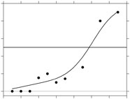

|  |
Model-free estimation of a psychometric function |
|---|---|
| Home | Downloads | Demonstration | Documentation | Examples | Functions | Contacts |
|---|
bandwidth_optimal
h = bandwidth_optimal(F,r,m,x,H,link,guessing,lapsing,K,p,ker,maxiter,tol,method);Finds the optimal bandwidth for the local polynomial estimator of the psychometric function with specified guessing and lapsing rates. The difference between this function and
bandwidth_cross_validationis that here the true psychometric function is known.Input:
ptrue: the true function; vector with the value ofptrueat each stimulus levelx
r: number of successes at pointsx
m: number of trials at pointsx
x: stimulus levels
H: search intervalOptional input:
link: name of the link function to be used; default is 'logit'
guessing: guessing rate; default is 0
lapsing: lapsing rate; default is 0
K: power parameter for Weibull and reverse Weibull link; default is 2
p: degree of the polynomial; default p =1
ker: kernel function for weights; default 'normpdf'
maxiter: maximum number of iterations in Fisher scoring; default is 50
tol: tolerance level at which to stop Fisher scoring; default is 1e-6
method: loss function to be used in bootstrap: choose from: 'ISEeta', 'ISE', 'deviance'; by default all possible values are calculatedOutput:
h: optimal bandwidth for the chosenmethod; if nomethodis specified, then it is three-row vector with entries corresponding to the estimated bandwidths on a p-scale, on an eta-scale and for deviance